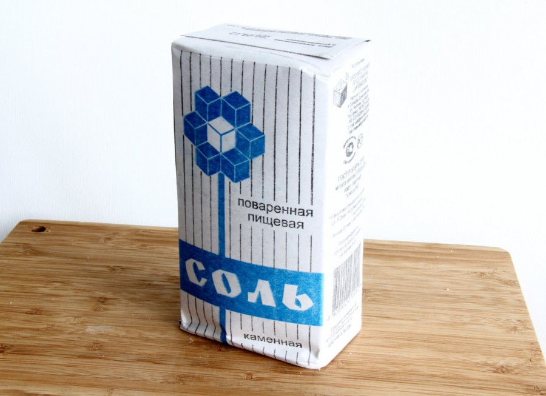

Соль – это продукт, многосторонне используемый в нетрадиционной медицине. Но иногда при лечении солью возникают различные виды осложнений, так называемые «побочные эффекты». Появляются они вследствие определенных видов заболеваний, при которых употребление соли оказывает неблагоприятное воздействие на организм. Более того, неправильное использование этого продукта, злоупотребление им в еде может стать источником болезней, дать серьезные осложнения уже имеющимся.
Существуют два пути, следуя по которым, поваренная соль наносит человеческому организму вред. Первый основан на ее разъедающих способностях. Здесь страдают по большей части органы, принимающие участие в пищеварении. Это желудок, в который соль попадает непосредственно из пищевода, а также почки. Причем почкам поваренная соль причиняет вреда гораздо больше. Это фильтр тела с очень нежной структурой и чутким восприятием. И неорганический химический элемент, каковым пищевая соль является, почки переносят тяжело.
Направляясь по второму пути, соль проникает в кровеносную систему человека, становясь участником разрушительного процесса, поражая систему кровоснабжения и водно-солевого обмена организма.
Думаем, следует начать с причины этого явления. Пищевая соль, широко употребляемая народом, состоит из натрия и хлора. Такое химическое соединение имеет способность задерживать в клетках человеческого тела воду. В результате у людей в организме наблюдается переизбыток воды, то есть нарушается водообмен. И, как следствие, – целый перечень заболеваний. У человека возникает отечность, появляется водянка. Человеческое тело и без того на 65–70 % состоит из воды. При водянке же эти цифры возрастают до чудовищных пределов.
Между кровяной и тканевой жидкостями происходит регулярный обмен. Из кровяных сосудов происходит постоянный выход влаги в окружающие ткани. Этот процесс непрерывен и называется транссудацией. И если жидкости выделяется много, а обратное всасывание приостанавливается, образуется скопление воды в тканях, что, собственно, и называется отеком. Внешние признаки – это набухание кожных покровов. Наиболее заметны при отеках лица, туловища, а также рук и ног. Очень часто отеки возникают в качестве спутников некоторых болезней. Например, той же водянки.
Водянка – это заболевание, при котором происходит накопление жидкости в подкожных клетках, тканях, полостях, суставах и т. д. Известны две разновидности болезни – местная и общая. Причиной местной водянки является сдавливание или закупоривание вен, что может быть следствием неумеренного потребления соли.
Одна из наиболее распространенных местных водянок – асцит. Это заболевание, при котором наблюдается большое скопление влаги в брюшной полости. Количество отечной воды достигает иногда 30 литров. При асците резко увеличиваются размеры живота, он натягивается, блестит его кожа, становятся видны вены.
При сердечно-сосудистых заболеваниях, при поражении почек у человека может наблюдаться общая водянка. В данном случае отечная жидкость будет находиться по всему телу, особо скапливаясь в нижних его частях. При общей водянке кожа делается гладкой, сухой, бледной и блестящей. Во время сердечных заболеваний она принимает синюшный оттенок.
В составе соли нет органических веществ, она не содержит витаминов. И поэтому этот продукт в виде пищевых добавок не только не оказывает питательного эффекта, но к тому же еще и может принести немалый вред.
Любовь человека к употреблению соли в пищу основана, главным образом, на великой силе привычки. Есть мнения, что раньше на поверхности нашей планеты существовало огромное количество минеральных месторождений. Древние люди постоянно пользовались подобными источниками, зная о целебных способностях этого дара природы. Со временем они приучили себя к соленому вкусу. Поэтому, когда потребление минералов потеряло свою доступность, пришлось искать им замену в виде поваренной соли, у которой, как выяснилось, кроме вкусовых качеств, общего с ними ничего не было.
И если при определенных заболеваниях продукт и демонстрирует благодаря химическому составу неплохую целительную силу, то при других болезнях соль может быть губительна.
Скопление соли в кровеносных сосудах благоприятствует возникновению тромбов. Это сгустки крови, образующие наросты на стенках сосудов, состоящие из соединительной ткани, замедляющие кровообращение. Любой человек теперь может легко представить разрушительные возможности подобных образований. Следствием тромбов становятся многие заболевания, некоторые из которых могут иметь смертельный исход.
Закупорка стенок сосудов называется тромбозом. Причиной сходного процесса иногда становятся тромбоциты, кровеносные пластинки, являющиеся одним из элементов крови. Но они в своем образовании никакого отношения к соли не имеют.
Тромбофлебит – воспаление стенок кровеносных сосудов с образованием тромбов. Часто эта болезнь развивается при варикозном расширении вен. При этом вены теряют эластичность, растягиваются. Местами они сильно расширяются и лопаются, образуя кровотечения.
Иногда при тромбофлебите сгустки крови и наросты рассасываются, иногда разрастаются, закупоривая просвет сосуда. Кровь изменяет направление и течет окольными путями. Бывает, что тромбы начинают гнить, и при разрыве вены они попадают в окружающие ткани. Случается также, что тромб отрывается и проникает в кровеносные сосуды различных органов. Такое заболевание носит название «эмболия». Или тромбоэмболия. Больные нуждаются в неотложной врачебной помощи. У них возникают серьезные проблемы с кровообращением, способные привести к инфаркту, гангрене и т. д.
Если у вас тромбофлебит, то ни в коем случае нельзя делать массаж. Это может не просто нанести весомый вред человеческому организму, но даже повлечь за собой в некоторых случаях смерть. Обязательно соблюдайте постельный режим, безотлагательно вызовите на дом врача. При этом заболевании заниматься самолечением очень опасно. Обращение за помощью к специалистам – необходимый фактор для дальнейшего выздоровления.
Недостаточное кровоснабжение сердца носит название коронарной недостаточности. Количество поступления крови в мышцу напрямую зависит от работы сердца. В моменты физического покоя мышцам требуется в несколько раз меньше крови, чем тогда, когда тело человека испытывает определенные нагрузки. Центральная нервная система регулирует расширение вен до необходимого уровня. В случае же закупорки артерии тромбом крови в сердце поступает недостаточно, и появляется коронарная недостаточность. Это может привести к ишемии миокарда или стенокардии.
Симптомами грудной жабы или стенокардии являются ощущения сильного сжатия и боль в области сердца. Эта болезнь может стать предвестником инфаркта миокарда (см. дальше). У больного наблюдаются приступы, имеющие протяженность от нескольких минут до получаса. Боли, как правило, возникают при физических нагрузках. При ходьбе, например. Также появление спазмов возможно при переедании, половом акте и многих других действиях, требующих усиленной подачи крови.
Идет, допустим, человек по улице, и в груди у него вдруг возникает сильная боль. Он останавливается – боль вроде бы стихает, но стоит ему вновь сделать шаг, как все начинается снова. В случае появления такого приступа человеку необходимо сразу же обратиться ко врачу.
Повышенное содержание в крови хлорида натрия способствует развитию атеросклероза – еще одного вида заболеваний кровеносных сосудов. При его действии стенки сосудов набухают, становятся неровными. Внутри артерий разрастается соединительная ткань, появляются атеросклеротические бляшки. В итоге сосуды забиваются, сужается просвет, и происходит недостаточное питание сердца кровью. Употребление большого количества поваренной соли во время атеросклероза – путь, целенаправленно ведущий на уничтожение собственного здоровья. Этот продукт необходимо исключить из своего рациона.
Следствием атеросклероза мозговых сосудов может явиться инсульт, представляющий из себя кровоизлияние, возникшее из-за сильного тромбоза (засорения сосудов тромбами). Такие кровоизлияния происходят внезапно, в период сильного перенапряжения. Сопровождаются они потерей сознания, повышением температуры, рвотой, иногда мочеиспусканием. Состояние очень опасно для жизни, нередко во время инсульта наступает смерть. Длится такое состояние обычно не более трех дней. После этого, при условии правильного лечения, к человеку возвращается сознание, и наступает период выздоровления.
У людей, перенесших инсульт, наблюдаются нарушения работы в какой-либо из областей головного мозга. Чаще всего последствием кровоизлияния становится гемиплегия (отсутствие произвольных движений какой-либо из частей тела), часто сопровождающаяся истериями. Случаются также и потери речи.
Конечно же, глупым и наивным выглядело бы утверждение, что в случае большой привязанности, скажем, к соленым огурцам, вас непременно «стукнет» инсульт. Или, допустим, вы не курите, алкоголем не злоупотребляете, по утрам делаете гимнастику и пятикилометровую пробежечку, питаетесь в целом правильно, да уж только обожаете хлеб ржаной, усыпанный сверху солью. И тут оказывается, что на каждом сантиметре ваших кровеносных сосудов «понатыкано» по десять тромбов. Разумеется, это будет уже из мира фантастики. Если такое было бы реальностью, тогда бы хлорид натрия относился в разряд ядов, и на его употребление наложили бы запрет.
Поваренная соль редко является единственным источником какого-нибудь заболевания. Зато в совокупности с другими факторами это неорганическое соединение способно нанести немалый вред здоровью. А к уже имеющимся болезням хлорид натрия может добавить серьезные осложнения. «Белая смерть» служит хорошим помощником алкоголизму, курению, наркомании, нервным перегрузкам в деле разрушения нормальной работы человеческого организма.
Инфаркт, являющийся следствием нарушения кровообращения, представляет из себя очаг омертвения ткани. При благоприятном результате ткани размягчаются и зарубцовываются. Если же такого не происходит, то органам человека могут быть нанесены различной степени повреждения, зависящие от силы развития и локальности инфаркта.
Потребление соли может послужить дополнительным источником для обострения инфаркта миокарда (миокард – сердечная мышца). Причиной является закупорка коронарной артерии сердца. Характерный признак болезни – приступ сильнейших болей в груди с сильной отдачей одну из рук, челюсть, шею и т. д. Существуют и другие симптомы. Давление, к примеру, после кратковременного повышения начинает резко падать, появляется холодный липкий пот, леденеют конечности. Такое крайне опасное состояние называется коллапсом. Через пару-тройку дней после начала болезни поднимается температура.
Для определения диагноза инфаркта миокарда используют электрокардиограмму.
До приступа инфаркта миокарда происходит период предвестников, который продолжается от нескольких часов до нескольких дней. В это время у человека наблюдаются кратковременные боли в сердце и за грудиной. Если в этот момент обратиться к врачу, приступа можно избежать.
Приступ продолжается обычно от нескольких часов до суток, затем наступает лихорадка, длящаяся около полутора недель. После начинается период выздоровления, текущий, в среднем, месяца два. И на этом еще болезнь не заканчивается – продолжение называется послеинфарктным периодом, в ходе которого больному необходим строгий режим и контроль специалистов.
В случае нарушения предписанного врачами режима, результатом инфаркта миокарда может быть даже смерть. Так что лучше подчиниться наставлениям специалистов и придерживаться правильного распорядка дня, ни в коем случае не курить, не употреблять алкоголь, ввести ограничения в питании и, конечно же, полностью исключить из рациона соль.
В случае нарушения кровообращения на определенных участках тела, вызванного закупоркой тромбами, может произойти омертвление какого-нибудь органа. Называется этот процесс гангреной. Гангрена чаще проистекает в тех областях тела, которые наиболее удалены от сердца. Она может стать, к примеру, одной из причин аппендицита.
Неблагоприятное воздействие поваренная соль оказывает и на органы пищеварения. Легко сделать вывод, что первый удар выпадает на желудок, в который хлорид натрия направляется прямо из пищевода. Здоровый желудок с перевариванием соли обычно справляется достаточно хорошо, растворяя ее желудочным соком. А вот при различного рода заболеваниях этого внутреннего органа употребление данного продукта необходимо уменьшить, а в особо серьезных случаях даже полностью прекратить.
Одним из примеров является гастрит. Эта болезнь вызывает острое воспаление слизистой оболочки желудка. У человека начинается отрыжка, рвота, сильная боль. И если к этому вдобавок происходит попадание в воспаленный орган большого количества поваренной соли, то рискнем предположить, что подобный процесс вряд ли окажет на организм целебное воздействие. Скорее, как раз произойдет наоборот – соль послужит катализатором для дальнейшего обострения.
Или язва желудка. Аппетит у таких больных, как правило, не страдает, бывает даже улучшается, и поэтому вводить ограничения в процесс питания для них представляется особенно сложным. Но такая процедура необходима вследствие усиленной чувствительности организма к трудноперевариваемым продуктам, в список которых входит и поваренная соль.
Да, безусловно, соль сама по себе вызвать язву не может. Но пользы тоже не принесет и может стать началом приступа специфических болей, которые несмотря на мучительность никогда не доходят до такой степени, когда требуется безотлагательное использование наркотических средств, как, к примеру, при мочекаменной болезни.
Хуже всего этот неорганический продукт переносят нежные почечные фильтры. И в том случае, если человек употребляет пищевой соли больше, чем могут переработать почки, то «белая смерть» частично остается в организме, становясь причиной различных видов опухолей.
Влияние поваренной соли на почки ведет к различным почечным заболеваниям. При поражении почечных клубочков возникает воспалительный процесс, именуемый нефритом.
При диффузном нефрите воспалению подвергаются обе почки, а при очаговом – ограниченное количество почечных клубочков.
Другое заболевание – нефроз – появляется в случае повреждения почечных канальцев. Симптомами нефроза служат отеки, выделение вместе с мочой большого числа белка, повышение в крови холестерина.
Отеки, в основном, появляются в области поясницы, живота, на половых органах и ногах, достигают временами предельно больших размеров. Причем жидкость скапливается не только в тканях, но и в полостях тела.
Нарушение водно-солевого обмена является главной причиной почечнокаменной болезни. Соль, находящаяся в моче в растворенном состоянии, подвергается кристаллизации, образуя мочевые камни. У человека возникают боли в пояснице, сильно отдающие в половые органы. Иногда для удаления камней требуется хирургическое вмешательство.
Боли при этом заболевании достигают немыслимой силы. Бывает, что приходится применять средства, оказывающие наркотическое воздействие, иначе человек может просто сойти с ума. В спокойном состоянии камни вообще находятся недолго.
Случается, что камни выходят из организма самостоятельно. Процесс опять же сопровождается дикой болью, выделением вместе с мочой крови.
В последнее время в лечении почечнокаменной болезни широко практикуются операции, проводимые с помощью лазера. Камень разбивается на очень мелкие частички и по мочеиспускательному каналу удаляется из организма.
Есть люди, считающие употребление соли занятием безвредным. В качестве доказательства они приводят в пример диких животных, которые, согласно утверждению, лижут соль. Заблуждение здесь заключается в следующем. Животные действительно лижут соляные породы, компенсируя тем самым вкусовой недостаток солей в их обычной пище. Но к хлориду натрия, используемому людьми, та соль не имеет никакого отношения. Это – минералы, в природе встречающиеся очень часто и для здоровья приносящие много пользы. Это все равно что сравнивать раствор хлорида натрия и «Боржоми».
Еще хотелось бы предостеречь от использования недоброкачественной соли. Известны случаи, когда, вероятно, в целях денежной экономии люди травились солью, появление которой на обеденном столе ничего общего с магазином не имело. «Чудесными месторождениями» являлись те места, связь которых с питанием очень относительна. В основном, функцию пищевой соли выполняло вещество, настоящим предназначением которого предусматривалось применение его на промышленных предприятиях. Человек пробовал на вкус этот продукт крупного обычно, помола и грязно-желтого цвета, узнавая в нем знакомую солоноватость. И брал домой. И не подозревал, что лежит в мешке не хлорид натрия, а вся таблица Менделеева. Если поваренная соль прозвана народом «белой смертью», то это вещество следует именовать «грязной моментальной смертью».
Универсальность применения соли в быту также имеет существенные ограничения. Не всегда поваренная соль может служить тем средством, использование которого было бы правильным в определенной ситуации.
Данное химическое соединение довольно часто бывает востребовано в очистке от загрязнения некоторых предметов. Но вот, допустим, хрустальную вазу чистить солью мы вам не посоветуем. Грязь отойдет легко, зато потускнеет хрусталь, перестав радовать глаз своими бликами.
То же самое касается и серебра. Как и хрусталь, металл быстро потеряет товарный вид. Страдает от подобной очистки и аллюминий. Так что ложки и кастрюли драйте лучше средством для мытья.
Не выдерживают обработки солью и предметы, покрытые лаком. Эффект тот же – поверхность разъедается.
Соленую воду очень часто используют при стирке. Она хорошо справляется с очисткой белья, придавая ему мягкость. В наше время особенно примечательна экономичность такого средства, обходится которое гораздо дешевле стиральных порошков. Но некоторые виды тканей стирать в растворе поваренной соли нежелательно. В первую очередь, это относится к шелку. После регулярных чисток солью он потеряет свою эластичность.
Если ваш дом не подключен к общей системе отопления, и воду в трубы вам приходится запускать самостоятельно, то наверняка может возникнуть искушение залить более теплоемкую соленую вместо обычной пресной. Но делать этого все-таки не рекомендуем, так как вскоре батареи обязательно прохудятся и придут в негодность.
Еще предупредим тех незадачливых сограждан, которые непонятно в каких целях, захотят продезинфицировать соленую воду хлоркой. Не делайте этого ни при каких обстоятельствах! В воде произойдет химическая реакция, в результате которой в воздух попадут очень ядовитые и вредные для здоровья газы, оказывающие на организм удушающе-отравляющее воздействие.
Экспериментаторов хотим также предостеречь от попыток нагреть соленую воду кипятильником, а также в электрочайнике. Приборы сразу же выйдут из строя. И дело здесь в том, что раствор будет обладать высокой электропроводимостью и чайник обязательно замкнет.
Кстати, хорошую электропроводность соленой воды нередко люди использовали в своих целях. У водолазов, скажем, спасательный жилет сконструирован таким образом, что когда морская вода проникает внутрь, то моментально загорается сигнальная лампочка, плывущая по водной поверхности. Задумка спасла уже немало жизней, спасет и еще, открывая новые перспективы применения соленой воды. Но тем не менее необходимо быть осторожными в постановках опытов над растворами поваренной соли в домашних условиях.
Совет начинающим кулинарам. Когда вы будете варить суп, солить его следует в самом конце. Так как в процессе кипения вода из кастрюли частично испарится и, значит, в объемах уменьшится. Следовательно, концентрация соли может значительно увеличиться, и суп получится пересоленным.
Нельзя пользоваться алюминиевой посудой при консервации. Произойдет окисление, солености приобретут неприятный металлический привкус. Питаться такой «закруткой» невозможно, а потому придется выбросить, и все усилия, приложенные вами, пойдут насмарку.
Не допускайте также попадания соленой воды на исписанную чернилами бумагу. Пресная вода высохнет, ничего особенно не изменив, соленая же превратит вашу рукопись в большую кляксу. Таким образом можно запросто лишиться какой-нибудь очень важной подписи, которой вы долго и упорно добивались, или еще какого-то значимого документа.
Во время зимнего сезона на обуви нередко возникает солевой осадок. Оставлять его нельзя. Хлорид натрия подействует на кожу разъедающе, и сапоги с ботинками долго у вас не проживут. Покроются трещинками, запросят «каши», и вам нужно будет покупать новые.
Вред, наносимый человеку поваренной солью, приводит нас к убеждению о необходимости удаления этого продукта из ежедневного рациона. Разумеется, полностью и сразу убрать поваренную соль не получится, необходим плавный, постепенный переход.
В истории, кстати, есть примеры бессолевого питания целых народов. Чукчи, скажем, едят морскую мороженую рыбу, не добавляя туда ни грамма соли. И на вкус такое блюдо, между прочим, очень даже неплохое.
Поваренная соль, вообще, у народов Севера используется нечасто. И ничего, справляются. Хотя сравнивать их с нами не совсем удачно. В тех местах, где господствует вечная мерзлота, природные месторождения соли встречаются, а те, что есть, – труднодоступны. Поэтому у людей, там живущих нет силы многовековой привычки, той самой, которая руководит нами.
Начинать бессолевую диету следует с ограничения в употреблении поваренной соли в чистом виде, в качестве приправы к зеленому луку, куриному яйцу или хлебу. Оно должно быть сведено до минимума, а может исключено полностью.
Очень вредны и некоторые природные соли, изначально содержащиеся в продуктах. Стоит отметить кофе и шоколад, которые вроде бы на вкус и несоленые, но среди их компонентов, соли отводится не последнее место. И сокращение их потребления является неотъемлемой частью бессолевой диеты. Также необходимо стараться употреблять как можно меньше птицы (особенно курицу) и бобовые. В них находятся соли, с трудом выводимые из организма.
Природа мудра, и во всех «живых» продуктах она распределила те пропорции компонентов, которые были им необходимы. То же касается и соли. Она содержится и в моркови, и в капусте, и в мясе. Причем объемы этого элемента отвечают тем требованиям, которые диктует нам наше здоровье. Следовательно, добавлять соль нет никакой надобности – она и так есть везде.
Применение бессолевой диеты должно быть основано на образе жизни человека, на соответствии потребностей его организма. Жесткие ограничения необходимо проводить гипертоникам, людям, страдающим нарушением кровообращения. При этом нужно учитывать другие факторы, сходно влияющие на здоровье. Курение, например. Этот процесс заставляет вены сужаться, заметно повышая давление. Необходимо иметь в виду и здоровье почек.
Если необходимость бессолевой диеты сомнения у вас не вызывает, то приготовьтесь забыть о блюдах, ставших давно привычными.
Пейте как можно больше минеральной воды. «Боржоми», «Ессентуки», «Новотерская целебная» продаются в каждом магазине. Воды имеют солоноватый вкус и очень полезны для здоровья (если, конечно, не нарветесь на подделку). К тому же минеральная вода поможет компенсировать создавшийся при диете дефицит солености.
Велико значение соли при консервации. Только в последнее время человек смог найти ей практическую замену. Порошок, помещение в который предохраняет пищевые продукты от порчи в течение долгого времени, назван согласно выполняемой функции, «консервантом». Но широкого применения он пока не имеет.
Хранение продуктов – штука немаловажная, и соль здесь выступает в роли хорошего помощника. Отказаться от нее очень тяжело, а бывает и невозможно. Определенные ресурсы возникают при использовании холодильника, но морозильные камеры тоже не бесконечны. Рано или поздно их вместительные возможности себя исчерпывают, и тогда консервация становится едва ли не единственным способом сохранить овощи.
Так что отказаться от баночки-другой соленых огурцов и помидоров не получится. Но, в конце концов, не так уж это важно. Употребленные в меру консервированные продукты на здоровье плохо не повлияют.
При бессолевой диете самым главным будет являться не злоупотреблять солью, стараться как можно меньше добавлять ее в пищу. Суп, картофельное пюре, каши и другие блюда лучше не солить вообще. Разумеется, потребуется время, для того чтобы привыкнуть к новому вкусу. Хорошее здоровье будет вам неплохой наградой за те усилия, которые пришлось приложить.